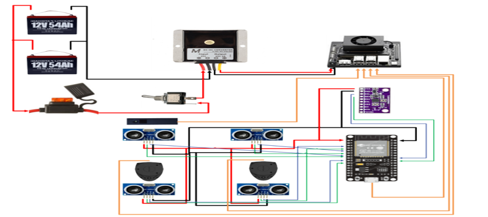

Full build — NVIDIA Orin Nano + dual RPLidar + Pico Flexx

ESP32 + BNO08x IMU on breadboard

RPLidar A1M8 ×2 — 2D 360° scan
01 — Hardware Build
The Platform
Starting from a donated electric wheelchair from the Mary Campbell Center, I designed and wired a complete autonomous perception stack — from 12V lithium power distribution through edge compute to every sensor driver, written from the SDK up.
NVIDIA Orin Nano — edge inference & ROS2 host, runs all sensor nodes
Pico Flexx (PMD ToF) — 3D depth camera, streams point cloud at ~30 Hz via roypy SDK
RPLidar A1M8 ×2 — dual 2D spinning LiDAR for 360° environmental coverage
BNO08x IMU — 9-DOF, provides orientation quaternion + gyro yaw rate to ROS2
HC-SR04 ×4 — ultrasonic near-field ranging (FL, FR, BL, BR), each published as PointCloud2
ESP32 — MCU sensor hub; runs custom serial framing protocol bridging sensors to ROS2
MCP4728 DAC + CD4066 analog switch — motor control interface from compute to drive electronics
Power architecture
Two 12V 54Ah Dakota Lithium batteries feed a circuit breaker, then a DC-DC converter steps down to 5V for the compute stack. All wiring, electrical housing, and cable routing designed and built by hand.